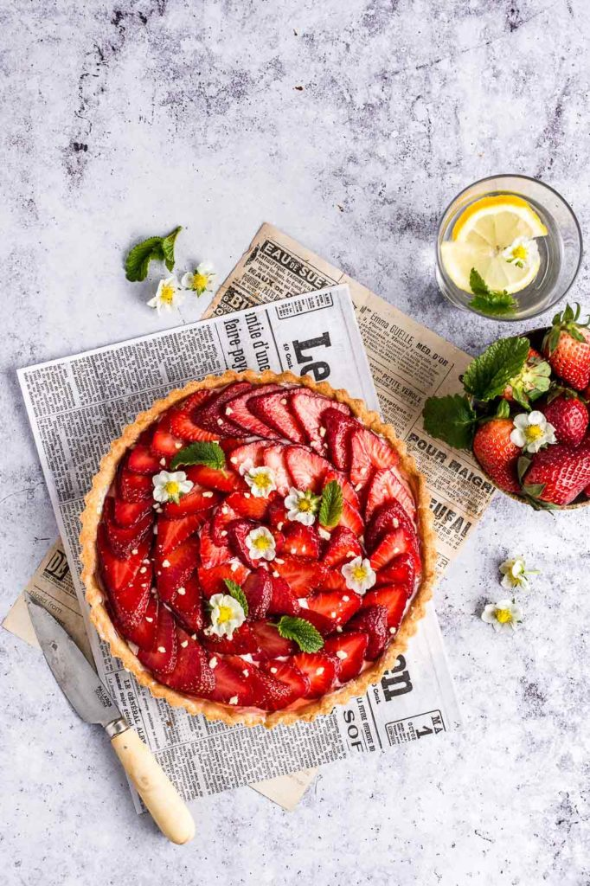

Recipe for Strawberry Mascarpone Tart
This no bake strawberry tart recipe has a creamy almond mascarpone filling and is topped with seasonal fruit, sliced almonds, and fresh mint. An easy dessert for all gatherings.
BACK

Ingredients
Crust:
- 3/4 cup (90g) graham crackers crumbs
- 3/4 cup (90g) almond meal or almond flour
- 5 tablespoons (75g) unsalted butter - melted
- 3 tablespoons (50g) almond butter - melted
Filling:
- 12 ounces (340g) mascarpone cheese - room temp.
- 1/4 cup (30g) powdered sugar
- 2 teaspoons vanilla bean paste (or pure vanilla extract)
- 1 teaspoon pure almond extract
- 16 ounces (2 pints) fresh strawberries
- 1 tablespoon (20g) pure honey
- 3 tablespoons slided almonds - toasted
- fresh mint leaves for garnishing
Instructions
- Prepare the crust: In a bowl, stir together the graham cracker crumbs, almond meal (or flour), butter, and almond butter until combined and all the crumb are moistened. Press the crust into an 8-inch round tart pan (*the original recipe in the book was prepared in a 14-inch x 4-inch tart pan; both sizes work well for this recipe). If desired, use the bottom of a small measuring cup to tamp the crust down evenly. Set aside
- Prepare the filling: In a bowl, stir together the room temperature mascarpone cheese, powdered sugar, vanilla bean paste (or extract), and almond extract until creamy and well combined. Spread evenly over the prepared crust. Refrigerate for at least 1 hour – this will ensure it slices cleanly during serving.
- The day of serving, slice the strawberries. Trim off the stems and slice vertically into thin slices. Remove the tart from the fridge and distribute the strawberry slices onto the mascarpone filling – feel free to arrange or decorate as desired.
To achieve a similar look as the photos above: starting from the outside of the tart and working your way in, layer the strawberry slices next to each other, in a circular pattern with the pointed ends facing out. Repeat, layering the strawberry slices slightly with each circle and so forth.
- Drizzle the tart with honey. Garnish with sliced almonds and mint, if using. Serve immediately or keep in the fridge, covered loosely with plastic wrap if needed, until serving.